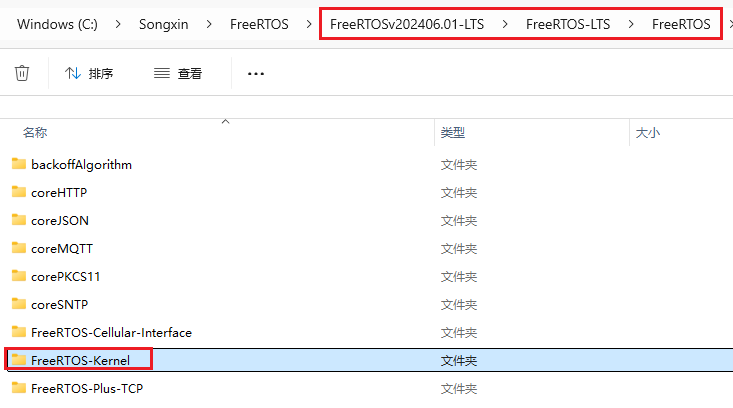
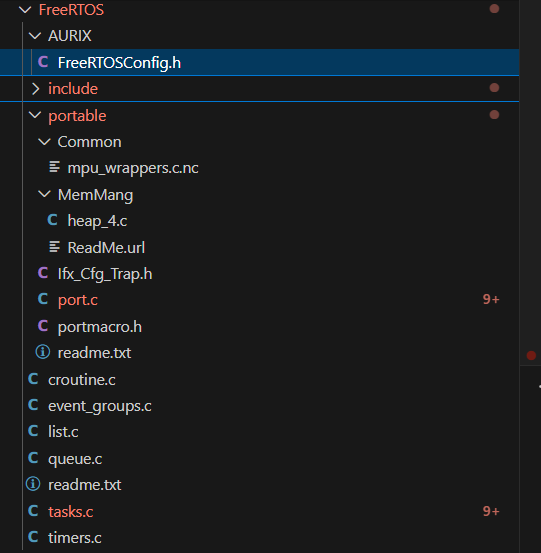
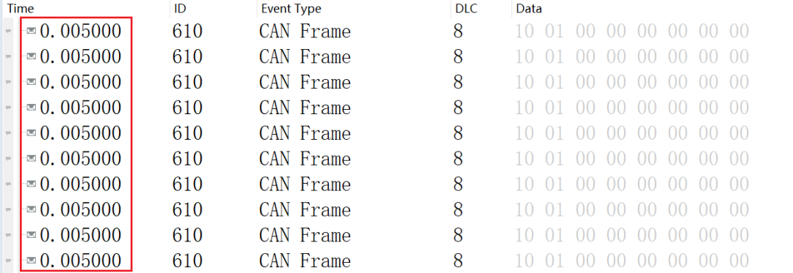

开心果 Need Car · 2026-04-30T06:22:00+08:00 · 微信原文
随着汽车电子向多核化、实时化和软件平台化方向不断演进，越来越多的项目开始在车规 MCU 上引入实时操作系统（RTOS），以提升软件结构的可维护性与扩展性。FreeRTOS 作为成熟、轻量级的实时操作系统，也逐渐成为工程实践中的重要选择。本文结合一次 TC397 平台上移植 FreeRTOS 的实际经验，对整体流程、关键点以及踩过的坑进行一次系统性的总结。
一、移植准备工作
1. 硬件与软件环境
在本次实践中，硬件平台选用 Infineon AURIX TC397，软件开发工具链包括：
编译器：Tasking
调试器：UDE（Universal Debug Engine）
2. FreeRTOS 源码获取


下载完成后解压源码，其中重点关注的是 FreeRTOS-Kernel 目录。在移植阶段，不需要完整引入所有组件，应优先复制内核基础文件，并根据 TC397 架构选择对应的 portable 实现文件，为后续裁剪与扩展预留空间。
二、任务创建与系统启动流程
1. 多任务设计思路
在本次示例工程中，采用静态任务创建方式，共创建 4 个任务：
LED 翻转任务
系统监控任务
10ms 周期任务
5ms 周期任务（用于发送 CAN 报文）
核心启动↓core0_main()↓vApplicationStartup()├─ xTaskCreateStatic(vTask1_LEDToggle...)├─ xTaskCreateStatic(vTask2_Monitor...)├─ xTaskCreateStatic(vTask3_10ms...)├─ xTaskCreateStatic(vTask4_5ms...)├─ initMcmcan()└─ vTaskStartScheduler() ← 启动调度器（永不返回）├─ 启用 STM0 系统滴答中断├─ 选择优先级最高的就绪任务（Task4_5ms）└─ 执行任务循环...
使用 xTaskCreateStatic() 的好处在于：避免动态内存分配带来的不确定性，更符合车规项目对内存可控性的要求。
2. 启动流程解析
整体启动流程如下：
（1）core0_main() 作为主核入口
（2）调用 vApplicationStartup() 完成系统初始化
（3）创建各类应用任务
（4）初始化 MCAN 外设
（5）调用 vTaskStartScheduler() 启动调度器
调度器启动后，会：
使能 STM0 系统滴答中断
根据任务优先级选择最高优先级就绪任务
进入正常的任务切换与调度循环
从运行结果看，ECU 能以稳定的5ms周期发送 CAN 报文，说明调度机制与时间基准运作正常。

三、FreeRTOS 在 TC397 上的周期任务实践
周期任务是车载系统中的典型应用场景，例如：状态采样、通信报文发送等。在本项目中：10ms / 5ms 任务使用 vTaskDelayUntil() 实现，确保任务以绝对时间基准运行，避免周期漂移。
这种方式相比简单的 vTaskDelay()，更适合对时序要求严格的控制类任务，也是 FreeRTOS 官方推荐的做法。
四、移植过程中遇到的关键问题
问题 1：全局变量pxCurrentTCB数据类型不一致
[] ltc E163: ["C:\Code\tc3xx_taking_freeRTOS_cmake\FreeRTOS\portable/port.c" 143/32] "pxCurrentTCB" redeclared with a different type[] ltc I459: ["C:\Code\tc3xx_taking_freeRTOS_cmake\FreeRTOS\tasks.c" 372/34] previous declaration of "pxCurrentTCB"
解决措施：修改port.c文件中的pxCurrentTCB声明，使其数据类型和task.c保持一致，修改后的声明如下：
/* Forward declaration of TCB_t from tasks.c */typedef struct tskTaskControlBlock TCB_t;/* This reference is required by the save/restore context macros. */extern TCB_t * volatile pxCurrentTCB;
修改后，编译问题消失，系统运行正常。这类问题在 FreeRTOS 移植中较为典型，说明内核文件之间的类型一致性极其重要。
五、经验总结与建议
通过本次 TC397 上移植 FreeRTOS 的实践，可以得到以下几点经验：
1.前期准备比代码移植更重要
工具链、芯片启动流程和中断机制不清楚，后续问题会成倍放大。
2.优先使用静态任务与静态内存
更符合车规软件对确定性的要求。
3.周期任务使用绝对延迟机制
避免控制逻辑因时间漂移产生隐患。
4.遇到编译问题时，优先对比内核源码
大多数移植错误都源于接口或类型不匹配。
结语
总体来看，FreeRTOS 在 TC397 平台上的移植难度可控，只要理解 AURIX 架构特点并严格遵循 RTOS 的移植规范，就能构建出稳定、可扩展的实时软件平台。这也为后续引入更复杂的应用任务、多核调度或 AUTOSAR 融合方案奠定了良好基础。
参考链接：
https://gitcode.com/open-source-toolkit/5f57b/?utm_source=tools_gitcode&index=bottom&type=card&&uuid_tt_dd=10_27423419310-1751511785198-206872&isLogin=1&from_id=143120500&from_link=f1acff0a44fbcac6d72ece7b6bd5af11
SMP的实现链接(Github):
https://github.com/yuejunwei1989/tc397_freertos_smp
往期精彩回顾